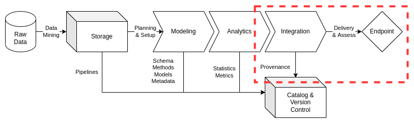

Integration#
Institutions and their projects will likely encounter a number of integration challenges: from delivery of requirement-specified data products to preservation of the data asset provenance including monitored changes over time. As a result, ciuTshi suggests a modular approach to data asset integration through a tool-agnostic guide to data delivery that facilitates both legacy and planned data endpoints. This approach intends to reduce the costs associated with maintaining data in lakes and other endpoints through tighter data governance practices and metrics. The governance practices do not compromise the speed and flexibility required for projects, ensuring resource utilization is optimized per requirements to maximize data asset value and reduce time on data task.
This document will outline the baseline for data integration practices, directing data engineers to content management systems and catalogs for details on specific data architecture implementations. ciuTshi’s data management system draws from DAMA[1] and other resources. For additional context on this documents sections, refer to the references section.
Challenge#
Institutions need consistent endpoint delivery for secure and high-quality data asset utilization. Customers deal with an increasing number of data assets per project and as a result demand persistent access and consistent quality. Similarly, stakeholders and data partners may require enrichment and process knowledge regarding data asset utilization. These points allude to the impact of sharing deep knowledge on data utilization and implementation. However, these methods can be abstracted and modularized for more broad internal application and external stakeholder transition. Institutions need to perform this task across multiple information systems and data architectures, making adaptive best practices a necessity for data management teams tracking system variations. An integration baseline would bring together all aspects of this challenge, from storage and modeling to analytics, metadata and cataloging: their quality having direct impact on the quality of integration practices.
Goals#
Deliver data securely across systems and organizations using documented and tested endpoint transition practices
Develop shared interfaces for modeled data resulting in increased value and reduced complexity for timely delivery of data products
Enable event detection and alerts for shifts in integration activity resulting in proactive detection of systemic issues
Support customer requirements through adaptive endpoint implementations grounded in data management best practices for improved stakeholder outcomes
Processes#

Preliminary Tasks#
Security and System Compliance#
Refer to the security and content management documents for guidance and templating of data asset integration content. This should cover considerations on system restrictions and guiding policies.
Role and Responsibilities#
These are the roles currently associated with data integration practices:
Data Manager
Deputy Data Manager
Project Manager
Legal Counsel
Project Lead
Data Management Team
Project Team
Data Engineers
Data Owners
Data Stewards
Trusted Transfer Agent
Refer to the content management system documents for integration practices on specific information systems, specific data architectures, and their associated roles.
Lifecycle Management#
Integration is focused on the design, development, and deployment of data endpoints to specified data architectures. This requires careful planning and analysis for not only the technical endpoint solution itself, but for the security and policy contingencies that limit the solutions functionalities and access. Though each information system architecture varies, baseline capabilities exist that allow data teams to plan and structure their best practices for incremental deployments while concurrently addressing critical engineering challenges.
Plan and Assess#
Prior to engaging with planning and analysis, the verified and validated data model must be accessible with a sufficient data profile. These pre-requisites situate and frame the integration solution for a quicker customer assessment and delivery. Requirements will largely drive the type of endpoint and its deployment location. This allows the data management team to better delegate data engineering tasks within a scoped endpoint lifecycle. Additional data discovery may be required depending on requirement addendum or disparities found during data modeling. Data asset outputs should be checked for expected format and quality. Documentation and metadata should be updated in appropriate CMS and data catalogs to ensure data lineage, data provenance, and analytics profiles match the expected outputs from the endpoint. Though policy should be verified during the data load and access phases of storage, a final check should be conducted to ensure the data asset being delivered is in line with data provider, data steward, customer, and stakeholder stipulations.
Design#
Once integration for a data asset is planned and verified, the data management team will design the final endpoint. This design will outline the data architecture resources, data engineering personnel, and their associated metrics for the development and deployment phases. Key tools and components should be identified from the institution’s common data operations baselines across all relevant systems, ultimately building the endpoint upwards based requirements-driven complexity. The context of architecture and requirements should help identify early blockers so solutions can be rapidly mobilized. Diagrams should be drafted for documentation on source to target flows, detailing the technologies and their function in support of the endpoint. These flows should make clear the data orchestration for the data asset. Keeping the asset at the center of design allows for optimized integration processes in support of the requirements. These processes will outline the ability to track dependencies, logs, alerts, and other issues both during development testing and post-deployment.
Databases#
Databases are a common endpoint for data assets. Requirements may dictate a specific database or may have left this at the engineer’s discretion. Regardless, documentation and metadata should be referenced to verify the scheme selected for the data asset. This verification should narrow the selection of a database for the endpoint. Specific management and deployment practices should be referenced in the target systems data architecture CMS documentation.
Application Programming Interface (API)#
APIs are common endpoint solutions. With requirements, such as advanced data visualization and integration of numerous technologies, tools, and standards, data endpoints must support more API features each year. This support requires an expanded array of solutions to be available to the data management team which must then be implemented for delivery of the data product to the customer. However, security and policy issues must be addressed as many of these API endpoints can open the institution and the customer(s) to unknown risks associated with access compromises and data leakages. Data owners and stewards should be notified in case third-party API endpoints are not working as outlined in the requirements or if the requested endpoint presents a known risk within the selected data systems or architectures.
Develop#
Upon completing and verifying the integration solution with the customer, development and testing may proceed. Resources will be deployed in line with the design, observing when metrics will be collected and observed for each element. Previous storage, modeling, and analysis efforts will be mobilized to facilitate the flow of data to the endpoint. Testing should be implemented as designed to ensure verification of the process, access to metrics, and verification of alerts in case failures occur. Essential functions such as migration and publication from the endpoint should be tested to ensure access and transition are possible. Lastly, documentation and metadata should be update with pertinent information on testing benchmarks, additional metrics, and design details not originally planned.
Delivery and Assessment#
The final stage for integration is delivery and monitoring. Prior to implementation, ensure tests have passed and stakeholders are notified of the endpoint’s deployment status. Final checks should be followed with documentation updates and monitoring the endpoint for the remainder of its defined lifecycle.
Implement#
Per the requirements, deploy the integration solution. Any blockers or additional challenges should be communicated to the data steward and customer quickly to ensure delivery timeline adjustments, and their associated costs, are minimal.
Data Provenance#
The data catalog is a persistent utility through which metadata captures lineage and provenance information for the data assets. Metadata on lineage beyond the endpoint should be recorded once verified by the customer and monitoring alerts. These metadata contributions will likely be data architecture contingent, but the lineage of where the data asset goes upon endpoint deployment should be recorded.
Monitor#
Within the data architecture for a deployed endpoint, the data management team must coordinate tasks and lifecycle benchmarks for monitoring alerts, logs, and other essential endpoint data artifacts. When issues in the integration solution arise, additional requirements must be defined, approved, and completed by the data management team. Once requirements are received, the team will be able to rapidly action the issue.